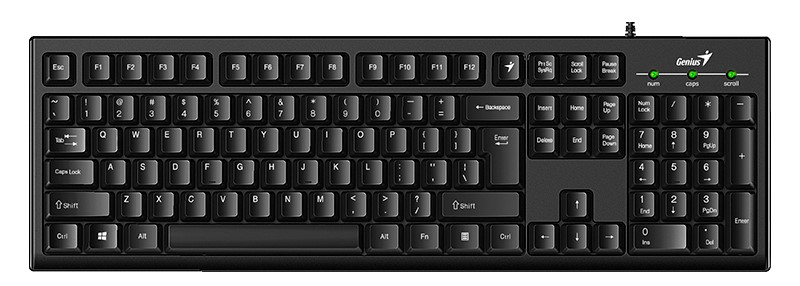
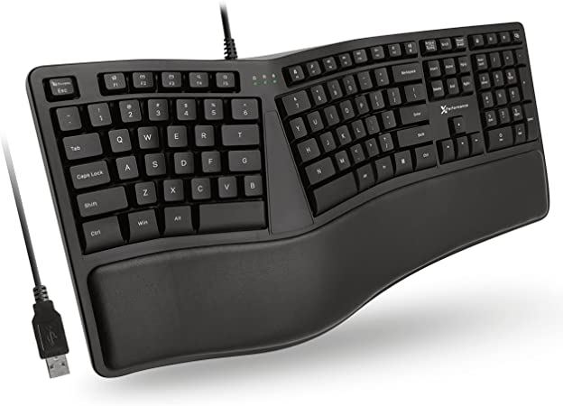
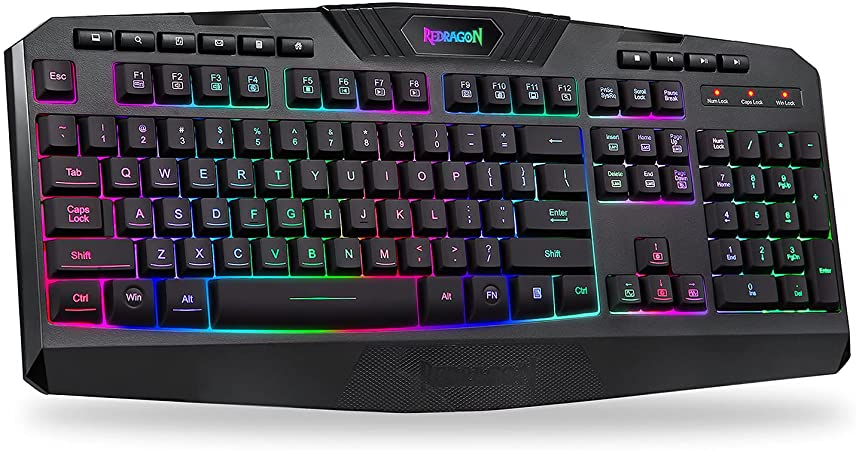
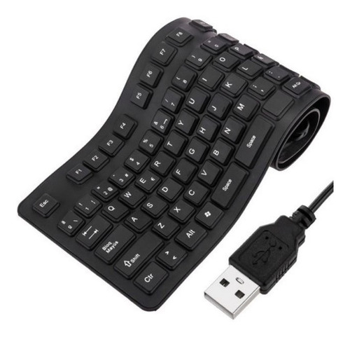
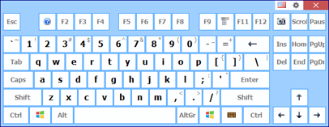
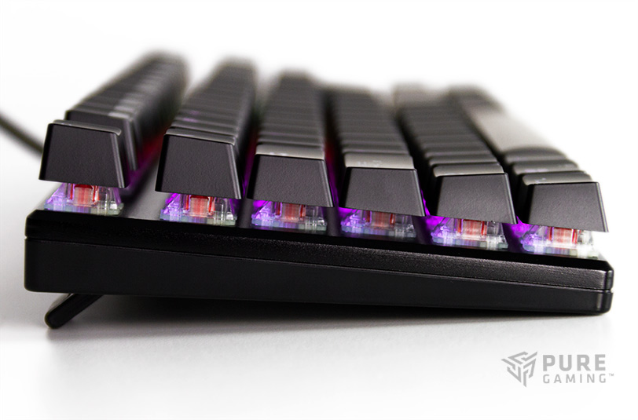

Classic keyboards: Those that are rectangular and follow the aesthetics of the standard IBM keyboard.
|  |
|  | Ergonomic
keyboards: Those that have been designed to adapt to the shape of human
hands and not cause as much damage to their joints.
|
Multimedia
keyboards: Those that have direct access keys to various
functionalities of the computer system, especially those that have to
do with audio, video, connectivity or even certain applications.
|  |
|  | Flexible
keyboards: Those produced from light elastic materials, such as
silicone or soft plastic, and that can therefore bend on themselves,
adapt to irregular surfaces or even some can be submerged in water,
without affecting their functionality.
|
On-screen
keyboards: Those that do not physically exist, but are projected onto a
touch screen or touch screen, and are pressed directly on it.
|  |
|  | Membrane
keyboards: Discontinued due to their low resistance to use, they
consisted of two thin plastic sheets or membranes, equipped with
conductive tracks on their inner face, so that when you press with your
finger, the electronic signal would pass through. |